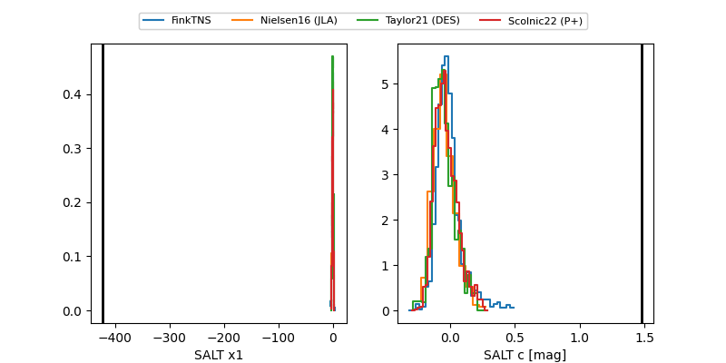

2025ahdj
Target 2025ahdj at 2025-12-31 18:00
Aliases and brokers:
FINK: link
Lasair: link
ALeRCE: link
TNS: link
YSE: link
alt names
ZTF25achxmsx (ztf,fink_ztf)
2025ahdj (tns,yse)
Coordinates:
equatorial (ra, dec) = 224.8407,+14.36289
equatorial (HMS+DMS) = 14:59:21.76,+14:21:46.41
galactic (l, b) = (16.2339,+57.61032)
Flags:
Photometry:
last ztfg=19.50, ztfr=19.36
1 ztfg, 6 ztfr detections
Lightcurve

Visibility


Additional plots
